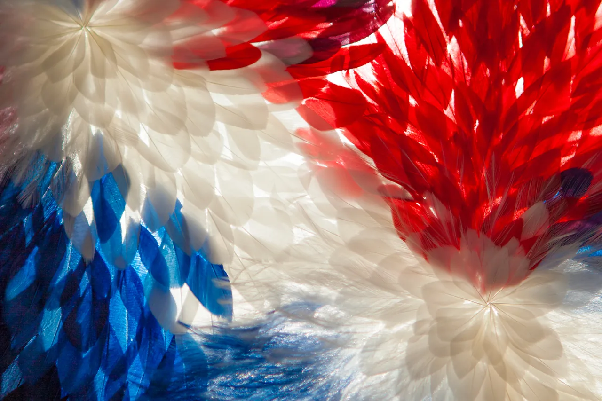

It’s been nearly a century since Paris hosted the Olympic Games. Much has changed since that time, but what has stayed constant is the French capital’s far-reaching influence on the cultural crossroads of art, fashion and sports. In lieu of the 2024 Paris Olympic and Paralympic Games, Pigalle frontman Stéphane Ashpool has been appointed as the artistic director and senior designer who will work in tandem with Le Coq Sportif to dress the French teams.
Globally recognized for his fusion of basketball with contemporary fashion, Ashpool brings an expert’s eye to tailoring, while respecting the traditions of the past and not being afraid of experimentation. Over the past decade, his label Pigalle has shown to be a force within the world of Parisian streetwear, with over 20 shows under his belt, as well as frequent collaborations with Nike and a basketball court made in collaboration with ILL-STUDIO.
“I’m born and raised in Paris, so I’m really proud to represent my country,” Ashpool told Hypebeast in an exclusive interview. “I signed a year ago and will be working till the last day before the Olympics, because many of the athletes are still competing to qualify for the team.”
